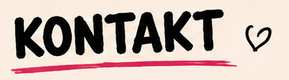
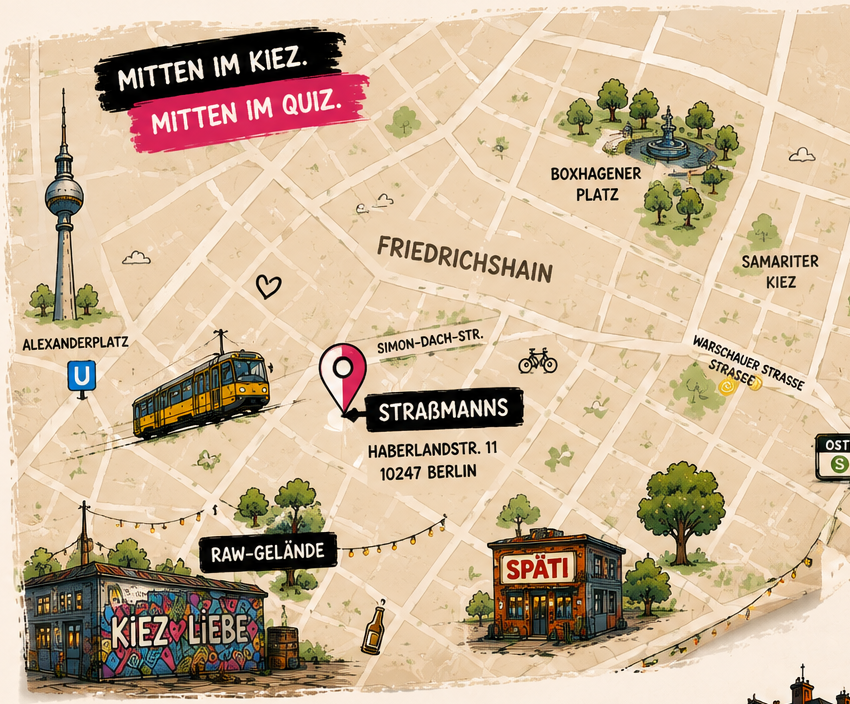

Schreibt uns, folgt uns oder reserviert euren Tisch!
Wir freuen uns auf eure Nachrichten, Ideen,
Veranstaltungsanfragen oder einfach ein nettes „Moin!“.

Straßmanns, Haberlandstr. 11, 10247 Berlin · Mitten im Kiez. Mitten im Quiz. ·
Friedrichshain · Boxhagener Platz · Samariterkiez · RAW-Gelände · Ostkreuz ·
Simon-Dach-Str. · Warschauer Straße.
Kontakt
Schreibt uns, folgt uns oder reserviert euren Tisch!
Wir freuen uns auf eure Nachrichten, Ideen, Veranstaltungsanfragen oder einfach ein nettes „Moin!“.
Instagram
@sahne.zum.tee.quiz
Tisch reservieren
Sichere dir deinen Platz beim nächsten Quiz!
E-Mail
hallo@sahnezumtee.de
Veranstaltungsanfragen
Ihr wollt uns für ein Event buchen? Dann meldet euch gern!
Noch Fragen?
Hier findet ihr Antworten auf häufige Fragen.
Straßmanns, Haberlandstr. 11, 10247 Berlin · Mitten im Kiez. Mitten im Quiz. ·
Friedrichshain · Boxhagener Platz · Samariterkiez · RAW-Gelände · Ostkreuz ·
Simon-Dach-Str. · Warschauer Straße.